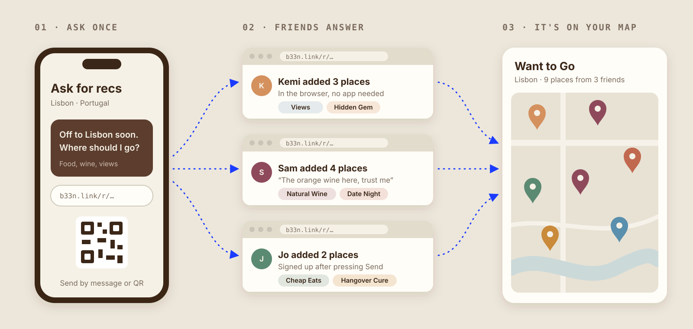
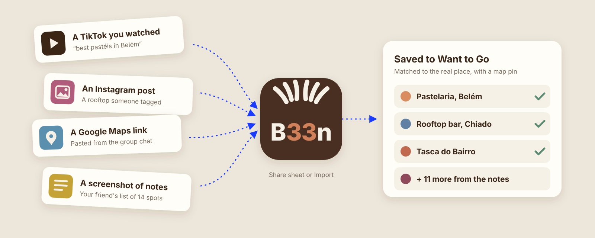
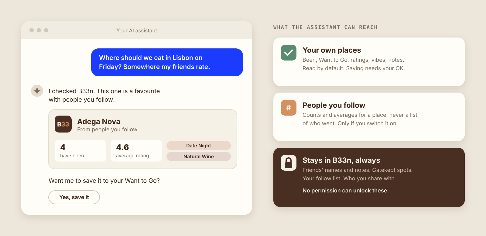

B33n: the best way to get place recommendations from friends
Group chats lose them, saved pins forget who sent them, and review sites are full of strangers. Here is how B33n is different, and how quickly it is changing.

Someone in the group chat is off to Lisbon. “Where should I eat?” Within an hour there are eleven replies, two voice notes, a Google Maps link with no name on it and a TikTok. By the time they land, it has all scrolled away.
The best recommendations have always come from people you know. You know their taste, they know yours, and they have actually been. The trouble has never been the advice. It is everything around it: asking, collecting, remembering who said what, and finding it again when you are standing on a street corner and hungry.
That is what we built B33n for.
How people swap recommendations today
Most of us use some mix of four things, and each is good at something.
- The group chat has the right people in it and no friction, but answers are scattered across a thread and gone in a week.
- Saved lists in a maps app are good at storing places, but a saved pin rarely remembers who told you about it or why.
- Review sites have every place on earth, rated by people whose taste you know nothing about.
- Dedicated place-saving apps are close cousins of B33n, and some are very good. Most start from your own list and add friends on top.
B33n starts from the other end. Your friends are the point, not a feature.
What B33n does differently
Ask once, with one link
Going somewhere? Create a rec request in B33n and send the link by message, or let a friend scan the QR code. Your friend opens it in their browser, searches for places, picks a category and a few vibes, adds a note, and presses Send. They don't need to install anything first. If they want to keep their places, they can sign up afterwards with Apple, Google or email, and you follow each other automatically.
Every answer lands in one place, on a map, in your Want to Go list. Not in a thread you have to scroll back through.

The city you're in, through your friends' eyes
Open B33n in Lisbon and you see Lisbon: the places people you follow have been, sorted by distance from where you are standing, and filtered by category if you like (Food & Drink, Dance, Entertainment, Shopping, Culture, Nature, Fitness & Wellness, Stays). Not everything everyone has ever saved, everywhere.
Vibes, not reviews
Nobody wants to write a review. In B33n you describe a place with up to three vibes, chosen from 38. One tap tells a friend more than five stars from a stranger.
- 🕯️ Date Night
- 🤫 Hidden Gem
- 💸 Cheap Eats
- 🍷 Natural Wine
- 🥘 Sunday Roast
- 👨👩👧 Parents in Town
- ☔ Rainy Day
- ☕ WFH Friendly
- 🐶 Dog Friendly
- 🍳 Hangover Cure
- 🪩 Big Night Out
- 🌅 Views
Save it from wherever you found it
Most places are discovered somewhere else first. B33n's share extension takes links from Google Maps, Instagram, TikTok and Yelp straight into your Want to Go list. The import screen goes further: paste up to 20 links or a block of notes, or add up to six screenshots of a friend's list, and B33n reads them (using Claude, Anthropic's AI model), matches each one to the real place, and saves it with a pin on the map.

Gatekeep: some places are just for close friends
Everyone has a spot they don't want overrun. Mark it as gatekept and only the people you choose can see it. Everyone else never knows it is there.
Works with your AI assistant, without giving away your friends
More and more people ask an AI assistant where to go. B33n can be part of that answer. Connect it to Claude or ChatGPT and the assistant can read your own places, save new ones if you allow it, and, if you switch it on, ask how the people you follow rate a place.
We drew a hard line around what it can reach. The assistant gets your own list, and for your friends only counts and averages: “4 people you follow have been, average 4.6, Date Night”. Never who, never their notes, never a gatekept place, and never your follow list. No permission can unlock those. B33n runs the sign-in, so you can see and disconnect every connected assistant from Profile, then Connected apps.
To connect it, add a custom connector in your assistant's settings with the address https://b33n.link/mcp, then sign in to B33n and choose what to allow.

B33n next to the usual options
This compares kinds of tools rather than named apps, because other apps change too, and we would rather be accurate than clever.
| B33n | Group chat | Saved lists in a maps app | Review sites | |
|---|---|---|---|---|
| Whose taste | People you chose to follow | Your friends | Mostly your own | Mostly strangers |
| Ask lots of friends at once | One link; friends answer without the app | Answers scattered through the thread | Not built for asking | Not built for asking |
| Just the city you're in | Yes, sorted by distance | No | You browse the map yourself | Yes, but everyone's opinion |
| Remembers who recommended it, and why | Name, vibes and note on every place | Until it scrolls away | Rarely | Not applicable |
| Private places for close friends | Gatekeep | A separate chat | Depends on the app | No |
| Ask from an AI assistant, friends kept private | Yes, counts and averages only | No | Depends on the app | Depends on the site |
| Price | Free, no in-app purchases | Free | Free | Free |
We ship fast, and we listen
B33n 1.0 went live on the App Store on 25 September 2026. Version 1.1 followed less than three weeks later, shaped by what early users told us:
- Push notifications for shared places, rec request replies and messages.
- Importing places from screenshots and links, including Google Maps and TikTok.
- Sharing a place in a chat turns it into a saved place you can both see.
- A Chats tab with an unread badge.
- Repeat shares from the same person grouped into one notification instead of ten.
- Faster, more reliable sign-in.
In the past month we made nearly a hundred changes to the app and the service behind it, from place photos that repair themselves when they go stale to the AI assistant connector above. If something in B33n annoys you, tell us at hello@omeoray.com. There is a good chance it will be different in the next release.
Questions people ask
Is B33n free?
Yes. B33n is free on the App Store, with no in-app purchases and no cap on how many places you save.
Do my friends need the app to send me recommendations?
No. A rec request link opens in any phone's browser. Friends add places and press Send, and only then choose whether to create an account.
Which cities does B33n work in?
Any city. Place search covers places worldwide, and the home screen follows the city you're in or any city you pick. We started in London.
Is B33n on iPhone only?
The app is on the App Store for iPhone. Anyone can answer a rec request from any phone or computer through the web.
Can an AI assistant see my friends' names or notes?
No. Through the connector, an assistant only ever gets counts and averages from people you follow, and only if you allow it. Names, notes, gatekept places and your follow list never leave B33n.
How do I connect B33n to Claude or ChatGPT?
In your assistant's settings, add a custom connector with the address https://b33n.link/mcp, sign in to B33n and choose what to allow. You can disconnect it from either side at any time.
Who makes B33n?
Omeoray Ltd, an independent software company in London. We build things.
Try it
Next time someone asks the group chat where to go, send them a link instead.